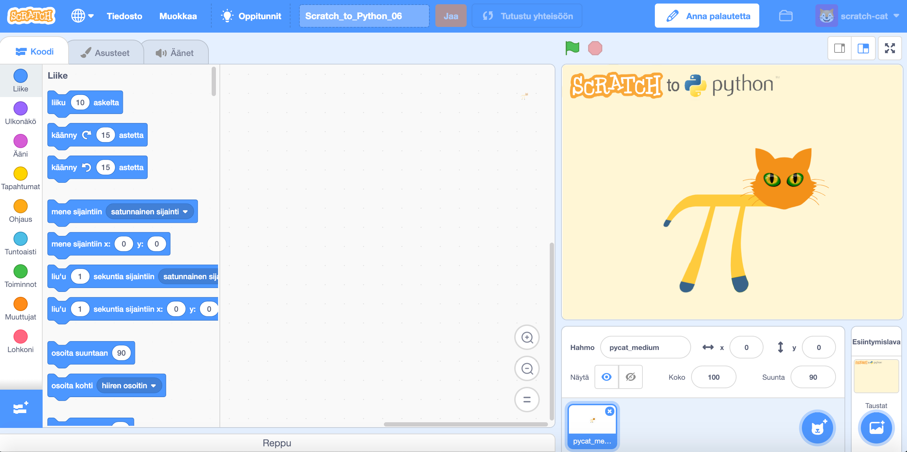
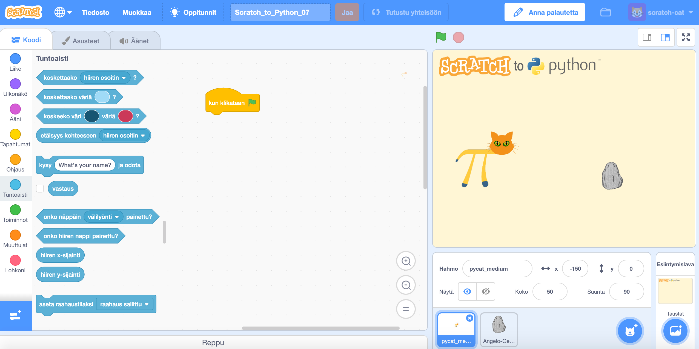
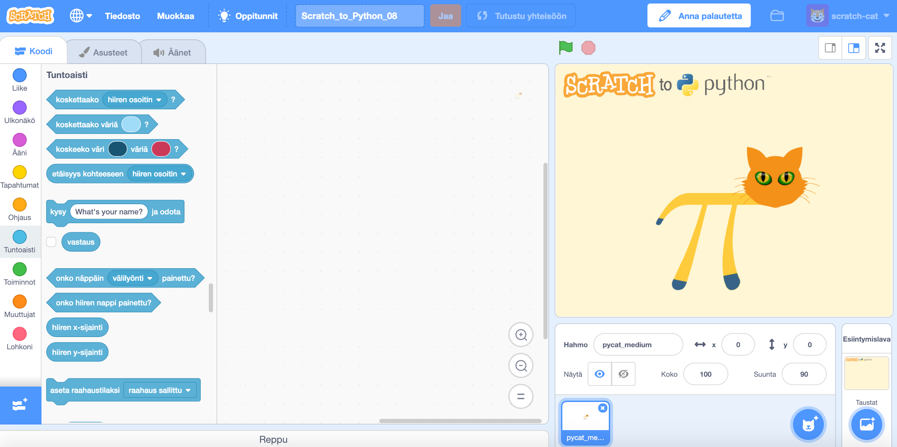

Ehtolause-haasteet
Haaste Scratch_to_Python_06
Tässä haasteessa opitaan tekemään ohjelma, joka kertoo annettiinko positiivinen vai negatiivinen numero. Jos annetaan negatiivinen numero, ohjelma pysähtyy. Pidetään nollaa positiivisena numerona tässä haasteessa.
Tässä haasteessa käytetään pelaajaoppimisen metodia. Ratkaisu voi löytyä yrityksen ja erehdyksen kautta. Yrityksen ja erehdyksen menetelmä on ongelmanratkaisun perusmenetelmiä.
Ohjeet
- Laita ohjelma kysymään "Anna numero". Löydät sopivan palikan Tuntoaisti-valikosta.
- Tarkista onko numero positiivinen vai negatiivinen. Löydät sopivan palikan Toiminnot-valikosta
- Jos numero on positiivinen tai nolla, Pycat sanoo puhekuplassa "Se on positiivinen numero".
- Jos numero on negatiivinen, Pycat sanoo puhekuplassa "Negatiivinen numero" ja ohjelma loppuu.
Haaste 06
Pääset haasteeseen joko "Haaste 06" -otsaketta tai haasteen kuvaa napauttamalla.
 Linkki haasteen Scratch_to_Python_06 -tiedostoon.Video ratkaistusta Scratch_to_Python_06-haasteeseen
Haaste Scratch_to_Python_07
Tässä haasteessa saadaan Pycat sanomaan puhekuplassa "Kivi!" ja pysähtymään, kun se koskettaa kivihahmoa.
Tässä haasteessa käytetään pelaajaoppimisen metodia. Turhaantuminen ja ärtymyksen tunne ovat oleellinen osa oppimisprosessia.
Ohjeet
- Animoi ensin Pycat kävelemään
- Vihje: Tuntoaisti-valikosta löytyy koskettaako-palikka, joka tarkistaa, koskettaako hahmo (Pycat) toista (kivi).
- Kiven paikka on ohjelmoitu valmiiksi vaihtamaan paikkaa joka kerta, kun vihreää lippua klikataan.
- Pycatin saa takaisin alkuasentoon välilyöntiä napauttamalla.
Haaste 07
Pääset haasteeseen joko "Haaste 07" -otsaketta tai haasteen kuvaa napauttamalla.
 Linkki haasteen Scratch_to_Python_07 -tiedostoon.Video ratkaistusta Scratch_to_Python_07-haasteeseen
Haaste Scratch_to_Python_08
Tässä haasteessa ohjelma kysyy nimeä "Mikä sinun nimesi on?" ja sanoo sitten "Hei" ja nimen puhekuplassa. Jos nimen sijasta kirjoitataan "loppu" ohjelma sanoo "Näkemiin" ja pysähtyy.
Tässä haasteessa käytetään pelaajaoppimisen metodia. Ratkaisu voi löytyä yrityksen ja erehdyksen kautta. Yrityksen ja erehdyksen menetelmä on ongelmanratkaisun perusmenetelmiä.
Ohjeet
- Tämä haaste on aika samanlainen kuin haaste 06, joten voit hyödyntää sitä, jollet muuten keksi ratkaisua.
Haaste 08
Pääset haasteeseen joko "Haaste 08" -otsaketta tai haasteen kuvaa napauttamalla.
 Linkki haasteen Scratch_to_Python_08 -tiedostoon.